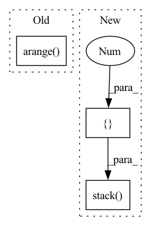

Pattern ID :24298
Before Change
layer = self.layers
elif layer > self.layers:
raise ValueError(f"Number of layers specified ({layer}) exceed layers in model ({self.layers})!")
representations1 = hidden_states[torch.arange( num_inputs) [:, None], query_idx1].mean(1)
representations2 = hidden_states[torch.arange(num_inputs)[:, None], query_idx2].mean(1)
else:
representations1 = list(map(lambda x: x[torch.arange(num_inputs)[:, None], query_idx1].mean(1), hidden_states))After Change
layer = self.layers
elif layer > self.layers:
raise ValueError(f"Number of layers specified ({layer}) exceed layers in model ({self.layers})!")
representations1 = torch.stack( [hs.squeeze()[idx[0]:idx[1]].mean(0) for hs, idx in zip(hidden_states.split([1 ] * num_inputs), query_idx1)])
representations2 = torch.stack([hs.squeeze()[idx[0]:idx[1]].mean(0) for hs, idx in zip(hidden_states.split([1] * num_inputs), query_idx2)])
else:
representations1 = list(map(lambda x: torch.stack([hs.squeeze()[idx[0]:idx[1]].mean(0) for hs, idx in zip(x.split([1] * num_inputs), query_idx1)]), hidden_states))
representations2 = list(map(lambda x: torch.stack([hs.squeeze()[idx[0]:idx[1]].mean(0) for hs, idx in zip(x.split([1] * num_inputs), query_idx2)]), hidden_states))In pattern: SUPERPATTERN
Frequency: 4
Non-data size: 3
Instances Fragment ID: 75490620
Project Name: kanishkamisra/minicons
Commit Name: b9f76e2dfc167677a5e1a4877b8bc76799a01974
Time: 2021-08-21
Author: menogetusername@gmail.com
File Name: minicons/cwe.py
M Class Name: CWE
N Class Name: CWE
M Method Name: extract_paired_representations(3)
N Method Name: extract_paired_representations(3)
M Parent Class: object
N Parent Class: object
M File Name: minicons/cwe.py
N File Name: minicons/cwe.py
M Start Line: 151
M End Line: 170
N Start Line: 151
N End Line: 170
Before Change
layer = self.layers
elif layer > self.layers:
raise ValueError(f"Number of layers specified ({layer}) exceed layers in model ({self.layers})!")
representations = hidden_states[torch.arange( num_inputs) [:, None], query_idx].mean(1)
else:
representations = list(map(lambda x: x[torch.arange(num_inputs)[:, None], query_idx].mean(1), hidden_states))
After Change
elif layer > self.layers:
raise ValueError(f"Number of layers specified ({layer}) exceed layers in model ({self.layers})!")
// representations = hidden_states[torch.arange(num_inputs)[:, None], query_idx].mean(1)
representations = torch.stack( [hs.squeeze()[idx[0]:idx[1]].mean(0) for hs, idx in zip(hidden_states.split([1 ] * num_inputs), query_idx)])
return representations
def extract_paired_representations(self, sentence_words: Union[Tuple[str], List[Tuple[str]]], layer:int = None) -> Tuple: Fragment ID: 75490616
Project Name: kanishkamisra/minicons
Commit Name: b9f76e2dfc167677a5e1a4877b8bc76799a01974
Time: 2021-08-21
Author: menogetusername@gmail.com
File Name: minicons/cwe.py
M Class Name: CWE
N Class Name: CWE
M Method Name: extract_representation(3)
N Method Name: extract_representation(3)
M Parent Class: object
N Parent Class: object
M File Name: minicons/cwe.py
N File Name: minicons/cwe.py
M Start Line: 109
M End Line: 132
N Start Line: 110
N End Line: 132
Before Change
item_order = np.random.permutation(n_items)
else:
// write trajectories in default order
item_order = np.arange( n_items)
def frame_gen():
for idx in item_order:
sub_dict = {}After Change
// add one to ends so that when we index with array[start:end], we get the
// full trajectory
traj_ends = traj_ends + 1
traj_starts = np.concatenate(([0 ], traj_ends[:-1]), axis=0)
traj_start_end = np.stack( (traj_starts, traj_ends), axis=1)
for start_idx, end_idx in traj_start_end:
trajectories.append({
k: v[start_idx:end_idx] for k, v in dataset_dict.items()
}) Fragment ID: 75490615
Project Name: humancompatibleai/eirli
Commit Name: 42a64e6b4c81fabe1e0535c503773dd62f2ff383
Time: 2020-11-24
Author: sam@qxcv.net
File Name: src/il_representations/scripts/mkdataset_demos.py
M Class Name: AnonimousClass
N Class Name: AnonimousClass
M Method Name: run(5)
N Method Name: run(5)
M Parent Class:
N Parent Class:
M File Name: src/il_representations/scripts/mkdataset_demos.py
N File Name: src/il_representations/scripts/mkdataset_demos.py
M Start Line: 50
M End Line: 66
N Start Line: 49
N End Line: 90
Before Change
item_order = np.random.permutation(n_items)
else:
// write trajectories in default order
item_order = np.arange( n_items)
def frame_gen():
for idx in item_order:
sub_dict = {}After Change
// add one to ends so that when we index with array[start:end], we get the
// full trajectory
traj_ends = traj_ends + 1
traj_starts = np.concatenate(([0 ], traj_ends[:-1]), axis=0)
traj_start_end = np.stack( (traj_starts, traj_ends), axis=1)
for start_idx, end_idx in traj_start_end:
trajectories.append({
k: v[start_idx:end_idx] for k, v in dataset_dict.items()
}) Fragment ID: 75490614
Project Name: humancompatibleai/eirli
Commit Name: a433a3485cdc7d68a6fb14f615a90eee6a176c11
Time: 2020-11-24
Author: sam@qxcv.net
File Name: src/il_representations/scripts/mkdataset_demos.py
M Class Name: AnonimousClass
N Class Name: AnonimousClass
M Method Name: run(5)
N Method Name: run(5)
M Parent Class:
N Parent Class:
M File Name: src/il_representations/scripts/mkdataset_demos.py
N File Name: src/il_representations/scripts/mkdataset_demos.py
M Start Line: 50
M End Line: 66
N Start Line: 49
N End Line: 90